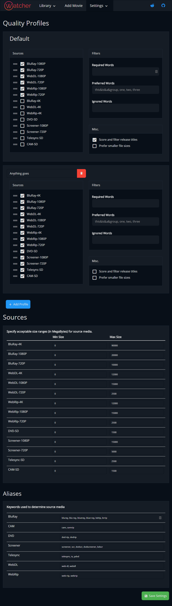

What is Watcher?
Watcher is an automated movie searcher. It watches for new releases of your favorite movies and automatically sends the torrent or nzb to your download client. Easily set up custom qualities, post-processing, and let Watcher do the rest.
Fast
Watcher was written from the ground up to be fast. Designed from scratch with one goal in mind -- efficiency. Ideal for low-powered hardware such as a RaspberryPi, but not lacking in features. Spend less time with Watcher and more time watching your movies.
Use any download client
Ok, maybe not any client, but most. Download from Usenet and Torrents with an ever-growing selection of download clients. It is easy to add NewzNab and Torznab (using Jackett or Cardigann) indexers, or enable any pre-configured torrent providers.
Extensible
Add custom funcionality with an easy to use plugin api. Fire off custom scripts when adding, snatching, or post-processing a movie. By removing the clutter of features you'll never use, Watcher gets the job done right quickly and stays out of your way.
Cross-platform
To use Watcher all you need is Python 3. That's it. With a clean and easy to read web-interface you'll be able to quickly manage your want list from any device. Host Watcher behind a reverse-proxy such as Nginx or Apache and safely access your server anywhere.
Tour
-
Poster view of library.
-
List view of library.
-
Compact view of library.
-
Status of library movie.
-
Server settings with Charcoal theme.
-
Downloader settings with Light theme.
-

Quality profiles with Midnight theme.
-

Post Processing options.
Download
Installation is fast and easy. Grab the lastest commit on Github and get started.